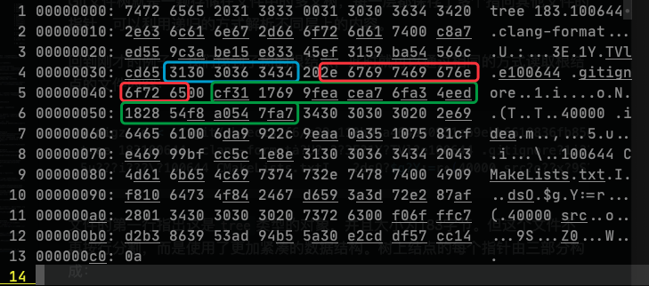

QGit - Git快照浏览器
2020年春季学期《高级程序设计》第三次课程设计
计算机科学与技术系 171860508 张天昀
一、主要内容
本次试验的主要内容为一个基于Qt实现的图形界面Git记录浏览器，可浏览Git仓库中的提交记录以及某个记录的文件系统快照。程序仅依赖于Qt5和zlib库，实现了一下功能：
- 读取Git仓库索引列表
- 解析某个分支/索引下的提交列表
- 解析提交时的文件系统快照，并展示文件
- 支持Git 1.6以后的packfile格式，不支持Git-LFS
整个工程的代码目录结构如下：
QGit
├── CMakeLists.txt # CMake配置文件
├── LICENSE # GPLv3
├── README.md # 此说明文档
├── assets # 文档使用的一些素材
├── dist # 预编译的可执行文件
└── src # 源代码目录
├── 3rdparty # 第三方代码
│ └── IconFontCppHeaders # 图标头文件
│ ├── IconsFontAwesome5.h
│ ├── IconsFontAwesome5Brands.h
│ └── licence.txt
├── resources # 资源目录
│ ├── 3rdparty
│ │ └── Font-Awesome # 图标字体文件
│ │ ├── fa-brands-400.ttf
│ │ ├── fa-regular-400.ttf
│ │ └── fa-solid-900.ttf
│ └── resources.qrc # Qt资源文件
├── headers # 头文件目录
│ ├── commit
│ │ ├── detail.h
│ │ ├── item.h
│ │ └── list.h
│ ├── constants.h # 全局常量
│ ├── gitfs.h
│ ├── reference
│ │ ├── item.h
│ │ └── list.h
│ ├── repository.h
│ ├── root.h
│ ├── snapshot.h
│ ├── tree
│ │ ├── detail.h
│ │ ├── item.h
│ │ ├── list.h
│ │ └── panel.h
│ └── welcome.h
├── reference # Git索引
│ ├── item.cpp # 单个索引类
│ └── list.cpp # 索引列表类
├── commit # Git提交
│ ├── detail.cpp # 提交详细信息类
│ ├── item.cpp # 单个提交类
│ └── list.cpp # 提交列表类
├── tree # Git文件树
│ ├── detail.cpp # 文件详细类
│ ├── item.cpp # 单个结点类
│ ├── list.cpp # 结点列表类
│ └── panel.cpp # 文件树面板类
├── gitfs.cpp # Git文件系统类
├── main.cpp # 程序主入口
├── repository.cpp # Git仓库窗口类
├── root.cpp # 主窗口类
├── snapshot.cpp # Git快照窗口类
└── welcome.cpp # 欢迎窗口类
二、Git文件系统简述
2.1 Git原理
Git在本质上就是一个文件快照系统。所有提交的文件通过zlib压缩后作为数据块，存储到一个将关键信息通过SHA-1算法运算得到的哈希值命名的文件当中去。
在提交的过程中，产生了三种基础类型的文件：
- 块文件（blob）：存储了文件压缩后的完整内容；
- 树文件（tree）：递归存储了一个目录中的所有文件的ID；
- 提交文件（commit）：存储了提交相关信息和树的根结点ID。
对于本项目而言，在Git目录中有两个不可或缺的文件夹：
-
refs文件夹中记录了所有索引指向的提交ID； -
objects文件夹中记录了所有提交到系统中的文件。
因此，只要打开的仓库目录完整地保存有以上两个文件夹，就可以通过文件夹中的内容恢复出所有的提交数据和快照，甚至不需要安装Git。
2.2 索引解析
索引解析是非常简单的工作。
refs
中的文件保存了索引指向的提交ID，直接读取文件即可。例如我们读取此项目
master
分支的提交索引：
$ cat ./.git/refs/heads/master
8a6a802e5a10aa3d285d2adf966b66b994a66d10
此时我们就得到了
master
分支的最后一次提交ID。
2.3 提交解析
找到提交的ID后，就可以在
objects
文件夹中找到对应的提交文件。SHA-1运算得到的哈希共有40位，所有文件根据前两位哈希值存放在不同的文件夹中，每个文件的名称为后续38位哈希值。
例如，根据刚才找到的提交ID，我们打开
8a/6a802e5a10aa3d285d2adf966b66b994a66d10
文件并解压缩，查看其内容：
$ pigz -d < ./.git/objects/8a/6a802e5a10aa3d285d2adf966b66b994a66d10
commit 757tree f6e29c110b03a464a30931cb9ebb6618836fb85d
parent 4dd85d0d77034cedb4187fc22526bc496368f812
author Tianyun Zhang <doowzs@qq.com> 1590675630 +0800
committer Tianyun Zhang <doowzs@qq.com> 1590675630 +0800
gpgsig -----BEGIN PGP SIGNATURE-----
iQEzBAABCAAdFiEEEPbmd4zAARFgDVTtEcwV8RJXUnQFAl7PyK4ACgkQEcwV8RJX
UnRqOggAynb1XoEGUG5deoYvzus+ZkwaiD31WYeJSK2WbbknlpRe3mSGE7udb7sP
tb0MOzjmb8NAzoPupj1xuNTjpXXtzWEYjV3T2ZxDm4Bw8oxWNA0LGibSwSC5lTv2
nhoSlvEhgCj0E61wti2jMyvnvRCuSUCqMsvJX4EZrpIAdzbmXI2rdYKfhKuqzpgQ
QSrVppQXUero+psxXW43nQ99oJLHQf3IDM3unkNhlGlZ7f41tvJsFLJzU2iDmKb4
Ldlh3C+sSwjVKf/O0SPZNxq76IVzWpTtr8PXsdBd7Lhtnbt4PKj+cqBU38LGf4NQ
Vm42WDSmIILxJo6v8UTG8bgkpphZ4g==
=zvjJ
-----END PGP SIGNATURE-----
reopen root window after closing a repository
提交文件的第一行（以
\0
字符结尾）指出了这个文件是
commit
类型的文件、大小757字节，接下来每行的内容都对应了不同的信息，从这个提交中可以提取的关键的内容为：
-
树的根结点是
f6e29c110b03a464a30931cb9ebb6618836fb85d -
此次提交只有
4dd85d0d77034cedb4187fc22526bc496368f812一个父结点 -
提交作者是
Tianyun Zhang <doowzs@qq.com> -
提交时间是
1590675630 +0800（UNIX时间戳） -
提交的标题是
reopen root window after closing a repository
通过宽度或深度优先搜索，我们可以找到整条提交树中的所有提交项目。
2.4 文件解析
Git文件树就是一颗存储在文件中的多叉树，每一层都保存了多个指向其他文件的指针，可以利用递归的方式解析不同层上的内容。
回到刚才的例子，我们找到了树的根结点，此时就可以通过相同的方式读取根结点的文件内容：
$ pigz -d < ./.git/objects/f6/e29c110b03a464a30931cb9ebb6618836fb85d
tree 183100644 .clang-formatȧ?U?:??3E?1Y?TVl?e100644 .gitignore?1i??Χo?N?(T??T?40000 .ideam??,??
5u???i???\?100644 CMakeLists.txtI ?dsO?$g?Y:=r⇯(40000 src?o??ҳ?9S???Z0???W?%

文件的第一行指出这是
tree
类型的对象，并且大小为183字节。但这个文件不再按行分割，而是使用了更加紧凑的数据结构。树上结点的每个指针由三部分构成：
-
mode（蓝色部分）：文件类型，Git中共有四种合法的文件类型： -
040000：tree结点 -
100644：普通文件 -
100755：可执行文件 -
120000：符号链接 -
name（红色部分）：一个空格后跟随字符串表示文件的名称，以\0为结尾。 -
hash（绿色部分）：长度为40的哈希值，指向存储该对象的文件。
上面图片中的矩形区域即为一条记录，指向一个叫做
.gitignore
的普通文件，它的哈希值为
cf311769
。
获得文件的哈希之后，我们就可以以同样的方法获取在提交时快照的文件内容了。
$ pigz -d < .git/objects/cf/3117699feacea76fa34eed182854f8a0547fa7
blob 3356# Created by https://www.gitignore.io/api/qt,c++,code,macos,clion
# Edit at https://www.gitignore.io/?templates=qt,c++,code,macos,clion
### C++ ###
# Prerequisites
*.d
（后续内容省略）
2.5 packfile
当运行
git gc
指令，或者从远程仓库获取文件时，所有的文件会被打包，作为一个文件进行传输并存储，此时需要从打包后的文件中获取对应的数据。
索引文件会被存储到
packed-refs
文件中，一行一个哈希值与索引名称，此处不详细介绍了。
对象文件会被打包到packfile中，此处结合 GitBook （GPLv3授权）的图片做一下简单说明：
存储对象的packfile共分为索引和数据两个文件，本项目仅实现了Git 1.6版本以后支持的packfile，即下图中右侧的索引文件版本。

- 文件头8字节存放魔数
-
fanout：256个int类型的数组成的区域，表示对应开头的哈希值共有多少个（fanout[0]表示00，fanout[1]表示01……） -
sha1：每20个字节存储一个哈希值 -
crc：每4个字节存储CRC校验码 -
offset：每4个字节存储数据文件中对应的偏移量 -
64b_offset：此部分与LFS有关，用于存储大于2GiB的文件，项目中没有实现 - 最后存放packfile的校验码
索引文件的存放方式决定了二分查找的读取方法：找到总项目数，然后在
sha1[0]
到
sha1[size]
之间进行二分查找所需要的哈希值，然后在
offset
数据表中直接读取出偏移量即可。

存放数据的packfile的格式为：
- 8字节的魔数、4字节表示对象数量
- 接下来每个对象采用变长方式存储：
- 第一个字节存储类型和4比特长度值
-
然后每个字节存储7比特长度值，直到最高位为
0 - 变长部分结束后存储文件内容
也就是说，读取packfile时，首先要根据在索引文件中的偏移量找到起始位置，然后读入第一字节判断对象类型，再读入变长的长度信息并计算长度，最后根据长度读入后续的数据。
2.6 OFS_DELTA与REF_DELTA对象
为了节省空间，在打包文件时会创建差分对象，由一个基础对象
base
和一系列差分指令
delta
组成。
-
OFS_DELTA对象的base存放在同一个文件中，当前对象偏移量减去offset的位置； -
REF_DELTA对象的base为变长长度之后的20字节表示的哈希值对应的对象。
差分指令共有两种：
-
最高位为
1为copy指令：从base中复制一部分到目标位置； -
最高位为
0为insert指令：从delta的后续中读取数据并插入到目标位置。
差分的文件形式较为复杂，且文档中几乎没有什么介绍，所以项目实现时参考了Git的源代码和一个Node写的Git客户端 "node-git-core" 的代码。